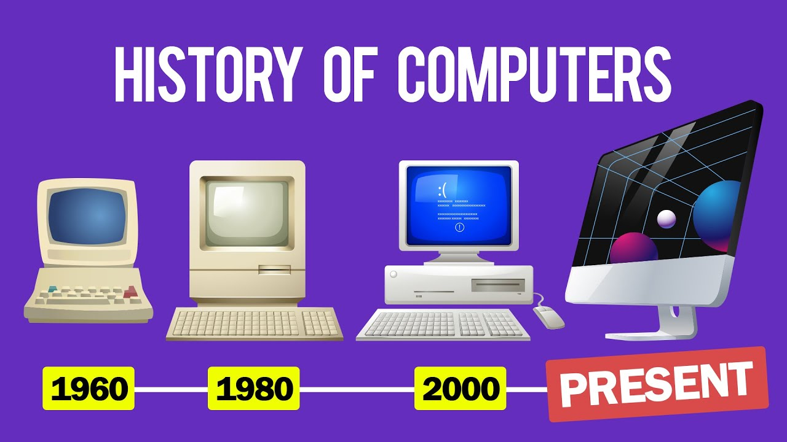
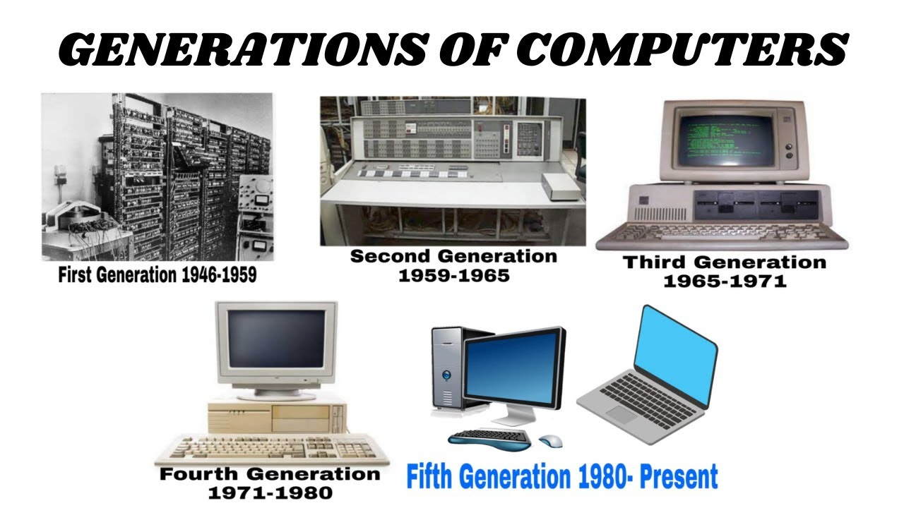

History Of The Computer

In The Beginning...
The history of computers starts out about 2000 years ago, with the birth of the abacus. When the beads on the abacus are moved around, according to programmingrules memorized by the user, all regular arithmetic problems can be done. In 1671, Gottfried Wilhelm von Leibniz invented a computer that was built in 1694. It could add, and, after changing some things around, multiply. About a century later Thomas of Colmar created the first successful mechanical calculator that could add, subtract, multiply, and divide.
Other Memprable Events ...
- In 1882, Babbage realized that many long calculations were really a series of predictable actions that were constantly repeaded. He began to design an automatic mechanical calculating machine which he called a diffrence engine.
- Herman Hollerith and James Powers made a step towards automated computing with the development of punched cards. Reading errors were reduced dramatically, workflow increased, and stacks of punched cards could be used as memory of almost unlimited size. for more than 50 years, punched card machines did most of the worlds first business computing.
- The start of World War II produced a large need for computer capacity. in 1942, John P. Eckert and John W. Mauchly decided to build a high - speed electronic computer to do the job. known as ENIAC, this machine could multiply two numbers at a rate of 300 per second.
- Early in the 50's two important engineering discoveries changed the image of the computer field - Magnetic core memory and transistor - circuit elements. These technical discoveries quickly found their way into computers. Such computer were mostly found in large computer centers operated by industry, government and privite laboratories.
- in the 1960's, efforts to design and develop the fastest posible computer with the greatest capacity reached a turning point with the stretch computer by IBM. Stretch was made with the fastest access time, and total capacity in the vicinity of 100,000,000 words.
- Many companies, some new to the computer field, introduced programmable mini computers supplied with software packages in the 1970's. The "shrinking" trend continued with the introduction to personal computers (PC's), which are programmable machines small enough and inexpensive enough to be purchased and used by individuals. Many companies, such as Apple Computer and radio shack introduced very successful PC's in the mid 1970's.
- By the late 1980's, some personal computers were run by microprocessors that, handlig 32 bits of data at a time, could process about 4,000,000 instructions per second.
- Computer networking, e-mail and the internet, and electronic publishing are just a few of the applications that have grown in recent years. computers continue to decrease in price, offering the promise that soon, "computers will reside in most homes, offices and."
Great Computer Quotes ...
teach that person to use the internet and they won't bother you for weeks."
The Five generations of computers
- Vaccuum Tubes - Vaccuum tubes allowed the first computers to perform digigtal computations Although tubes made a comeback in high-end stereo components, they have long since been abandoned for TVs and computer monitors.
- Transistors - a miniature semiconductor that regulates or controls current or voltage flow in addition amplifying and generating these electrical signals and acting as a switch/gate for them.
- Integrated Circuits - Commonly called a chip, made out of a semiconductor material called silicon, in which small electronic components called transistors are formed within the silicon and then wired together.
- Microprocessors - A microprocessor is a small processing unit inside a CPU. it is a single integrated circuit on a computer chip that performs various arithmetic and logic functions on digital signals.
- Artificial Intelligence - Artificial intelligence makes it possible for machines to learn from experience, adjust to new inputs and perform human-like tasks. Examples of A.I are from chess playing computers to self driving cars which rely on deep learning and natural language processing